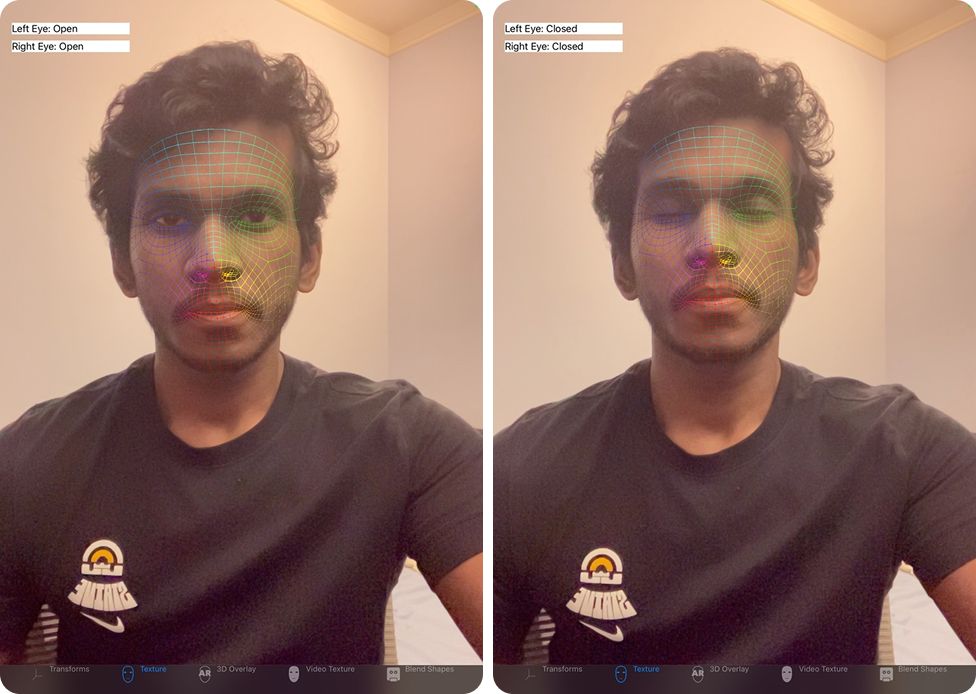

🚀 Featured Project
DARPA Triage Challenge - Core Member, Team Chiron
Development and Deployment of Remote Health Sensing Models
“When we have a significant emergency where there could be danger to the responders, you can save lives by not sending in a human right away. This autonomous triage system allows us to provide rapid help to as many victims as possible without needing extra human power — an essential gap to fill when medics are limited.”
— Dr. Lenny Weiss, Professor of Emergency Medicine, UPitt; Medical Director of City of Pittsburgh Police-SWAT

🔬 Key Contributions
🏥 Ocular Alertness Detection
- Developed an ARKit-based system to assess ocular alertness via blink rate tracking. 
❤️ Heart Rate (HR) Detection
- Led testing across classical spectral-reflectance models and transformer-based architectures.
- Final model deployed: a 3D CNN-based system, benchmarked extensively on custom IRB-approved datasets.
📹 Demo
🩸 Hemorrhage Detection
- Conducted extensive benchmarking of segmentation models and Vision-Language Models (VLMs).
- Final deployment: A segmentation model detecting severe hemorrhage presence in real-time robotic data streams.
📹 Live Robotic Data Demo
This research opened a new problem space—achieving grounding in small models for data-scarce tasks.
As we tackle the much harder challenge of performing hemorrhage detection in further degraded sensing environments for Year #2 Challenge (daytime operations in thick smoke, nightime operations with no visible illumination, etc.) we are continuing to investigate - (i) how do we achieve strong visual grounding in unstructured environments despite the scarcity of relevant data? and (ii) how do we use multimodal data streams - like multispectral imaging - to characterize hemorrhage presence even in absence of RGB illumination?
📌 Other Projects
🧠 Seizure Classification from EEG Signals
- Developed a novel framework for capturing inter-annotator variability (aleatoric uncertainty) in seizure detection classification using EEG data.
 📄 Read the Publication
📄 Read the Publication
🫁 Pleural Effusion Diagnosis
- Built a segmentation model for pleural entity detection, aiding LSUHSC radiologists in diagnosis.
🎭 Uncertainty-Aware Segmentation
- Developed a framework for uncertainty-aware segmentation, in collaboration with a friend and a fellow researcher, Nishanth TA.
- Research manuscript in progress.

📎 Other Links
📩 Get in Touch
If you’re interested in working together or just want to chat science || books || music - feel free to reach out via LinkedIn, Twitter or Email.